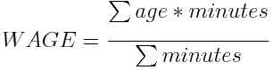

Throughout NBA history, the teams that win championships have almost always done so with the right mix of skilled players and veteran talent. Ability alone is not enough to win a title. Given this fact, the teams that are expected to win championships generally have at least few players who would be classified as "old."
This begs a few questions:
To answer these questions, we must define how the age of an entire team is classified. It would be unreasonable to simply average the ages of the teams' roster, because certain players play much more than others. What if a team has 5 players over the age of 35, but they each averaged less than 10 minutes a game? To calculate the age of a team, both the ages of the players and the number of minutes played for each player must be considered. So, the following formula will calculate the weighted age (WAGE) of a team:
where minutes is the total number of minutes played by 1 player (note: playoff minutes were used to determine the age of a team as they made their title run). So, WAGE is calculated by multiplying the age and minutes played by one player together, taking the sum of this result for all players, and dividing that sum by the total number of minutes played by the entire roster.
The following are the youngest teams to have won an NBA championship:
| Championship Team | Weighted Age (WAGE) | |
|---|---|---|
| 1. | 1976-77 Portland Trail Blazers | 24.199 |
| 2. | 1955-56 Philadelphia Warriors | 25.587 |
| 3. | 1979-80 Los Angeles Lakers | 25.710 |
| 4. | 1954-55 Syracuse Nationals | 25.867 |
| 5. | 1951-52 Minneapolis Lakers | 25.940 |
| 6. | 1970-71 Milwaukee Bucks | 26.049 |
| 7. | 1974-75 Golden State Warriors | 26.386 |
| 8. | 2014-15 Golden State Warriors | 26.393 |
| 9. | 1952-53 Minneapolis Lakers | 26.485 |
| 10. | 1956-57 Boston Celtics | 26.556 |
The following are the oldest teams to have won an NBA championship:
| Championship Team | Weighted Age (WAGE) | |
|---|---|---|
| 1. | 1997-98 Chicago Bulls | 32.096 |
| 2. | 2010-11 Dallas Mavericks | 31.607 |
| 3. | 1968-69 Boston Celtics | 30.914 |
| 4. | 1996-97 Chicago Bulls | 30.790 |
| 5. | 2006-07 San Antonio Spurs | 30.759 |
| 6. | 1995-96 Chicago Bulls | 30.526 |
| 7. | 1998-99 San Antonio Spurs | 30.090 |
| 8. | 2012-13 Miami Heat | 30.077 |
| 9. | 1967-68 Boston Celtics | 30.033 |
| 10. | 2013-14 San Antonio Spurs | 29.617 |
The average WAGE for a championship team is 28.234. The youngest team (Bill Walton's 1976-77 Portland Trail Blazers) was nearly a full standard deviation younger than the next youngest team (Paul Arizin and Neil Johnston's 1955-56 Philadelphia Warriors). Michael Jordan led his 1997-98 Chicago Bulls to their 6th championship in 8 years and became the oldest team in history to win a title.